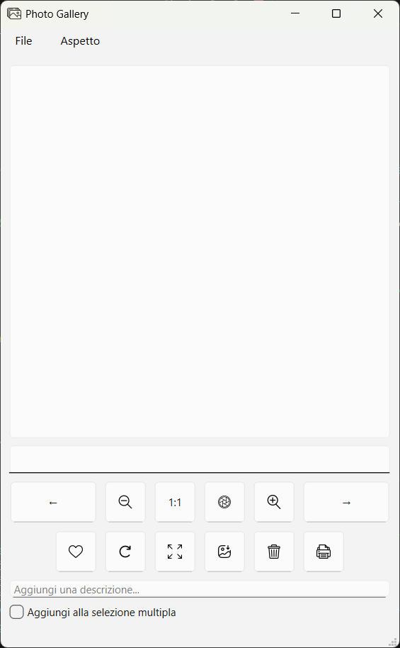
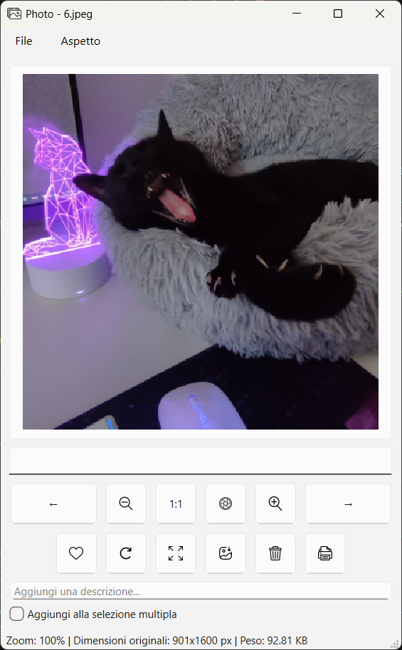
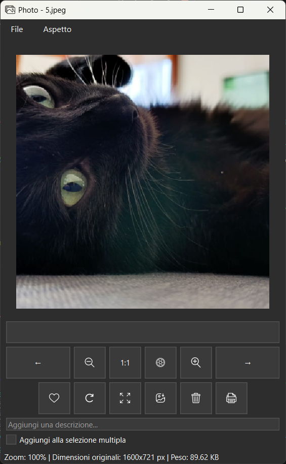
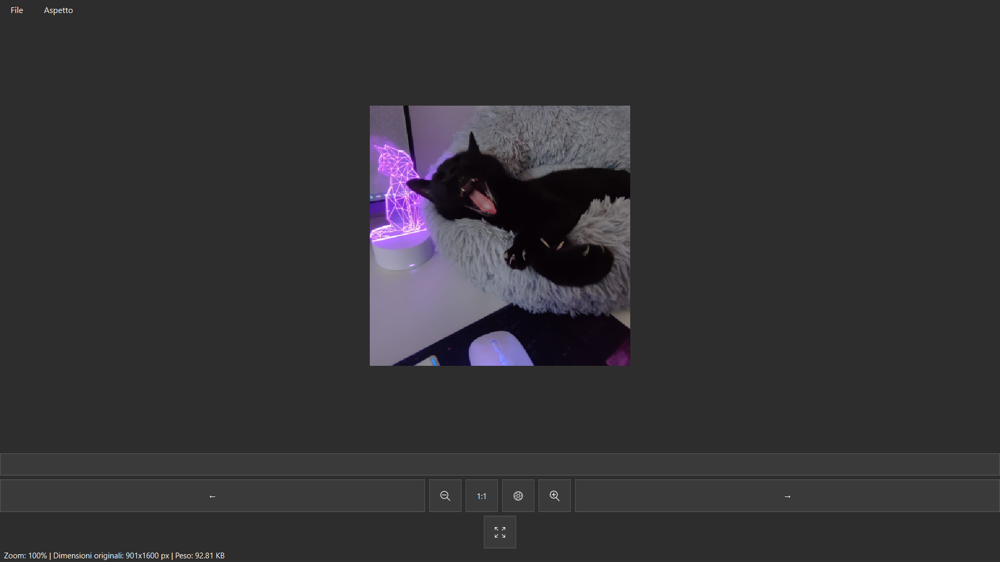
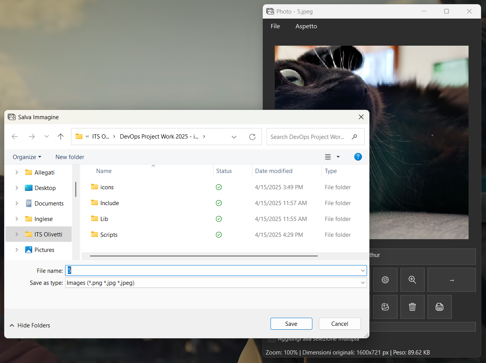
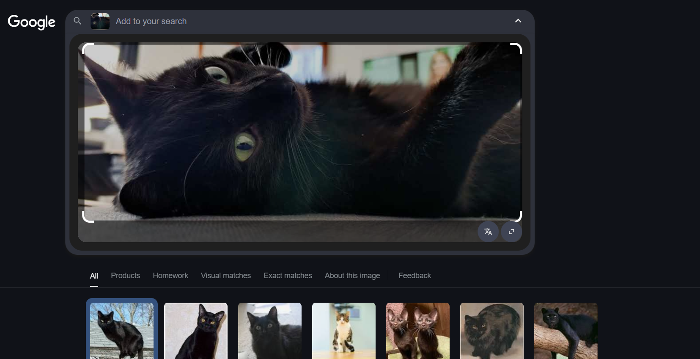

«Un'applicazione desktop per esplorare immagini, progettata con cura e attenzione all'usabilità»
Genere: Applicazione GUI, Visualizzazione immagini
Linguaggi utilizzati: Python, PyQt
Link: github.com/mmilasi/photoGallery
Il Project Work realizzato nell'ambito del corso Cloud DevOps che frequento presso l'ITS Adriano Olivetti, sotto la supervisione dell'Ing. Stefano Castagnoli, ha come obiettivo la creazione di un'applicazione desktop per la visualizzazione di immagini, utilizzando il linguaggio Python e il framework PyQt. L'applicazione è progettata per offrire un'interfaccia utente intuitiva e reattiva, adattandosi dinamicamente alle dimensioni della finestra. Tra le funzionalità implementate vi sono:





